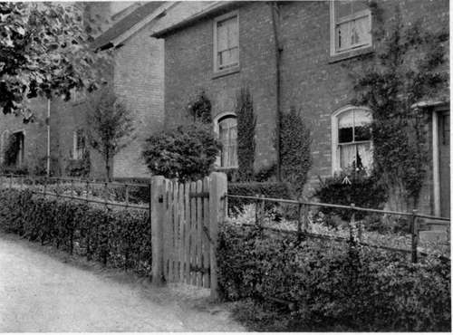
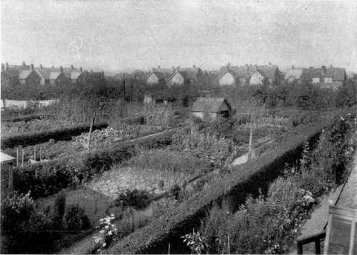

Appendix. How To See English Gardens
Description
This section is from the book "What England Can Teach Us About Gardening", by Wilhelm Miller. Also available from Amazon: What England Can Teach Us About Gardening.
Appendix. How To See English Gardens
ENGLAND is one great garden." We often hear this phrase, but the glory of its meaning does not burst upon an American until he has set foot upon English soil. It means that every home has its garden; that every foot of ground not occupied by buildings is likely to be cultivated to the utmost; and that one cannot drive or ride or walk anywhere without seeing beautiful gardens.
Why, then, a guide? Because it is hard to get into the best gardens. It is easy enough to get into a private park, but it is as difficult to get into a man's garden as into his house. At first the red tape is irksome to an American. One hates to write to Lord So-and-so, look up the proper salutation in De Brett, ask for permission, wait a week until his lordship returns from the Ascot, and then have him set a date two weeks hence when you will be in France.
However, a good fee to the head gardener will often secure admission to a great garden, provided the family is away. Again, some of the most famous old gardens are open certain days and hours in the week under conditions noted in Baedecker. And, best of all, there is a perfect guide to all the great estates of England, which costs only a shilling. It is called "The Garden Annual," and can be ordered from Gardening, which is at 17 Furnival Street, Holborn, London, E. C.
This "Garden Annual" was a steady joy to me in the spring and summer of 1908. I spent eight weeks visiting gardens, and though I travelled fast I did not see even one tenth of the most important estates. The experience was infinitely more delightful than concentrating on London, as most Americans do. It is pleasanter and more instructive to have a theme in travelling than to do ordinary sight-seeing. If you take gardens for your theme, it may rest you more than anything else, and you will get nearly, if not quite, as much history, architecture, and general sight-seeing, as the unthinking mob.
The ideal way to see gardens is by automobile. Railroads and cabs are a thorn in the flesh, because the former touch only the outskirts of a place and the long cab journeys to country seats are slow and costly. Moreover, the road views are better than those from the car windows. Finally, the Automobile Association in England really does things. Its sign in front of an inn means such comfort and hospitality as Americans only can appreciate, for we have nothing like them. When you have breakfasted in the garden back of the inn at Burford or slept in the oak room at Chiddingfold (twelfth century), you really pity from the bottom of your heart the mob of Americans who are sweltering in London.
No matter where you are, the "Garden Annual" will give you a list of all the beautiful estates in that locality or country. And in every locality there is a nurseryman or florist who will tell you which is the best place to see and how to see it with the least trouble. From horticulturists, also, you will hear about the big flower shows, of which the two most important are those at the Temple and Holland House. There is an endless succession of flower shows in all parts of the country, and they are usually crowded with fashionable people. If you are an enthusiast on shows you can get a full list from one of the gardening papers, for most of them publish calendars.
A SHALLOW FRONT YARD AND A DEEP BACK YARD IS THE FAVOURITE IDEA AT BOURNVILLE, WHERE THEY HAVE THE BEST COTTAGE GAKD£NS.. INSIDE TH^} , HAWTHORN HEDGE ARE FLOWER BEDS. PORTABLE IRON WORK PRt)tV>C^S'^ttE HE'P<^&* FOR A FEW YEARS.
THE ENGLISH COTTAGER'S BACK YARD IS SURROUNDED BY A LOW HAWTHORN HEDGE. YOU CAN SEE OVER IT BUT IT KEEPS OUT DOGS, CATS, CHICKENS, CHILDREN, AND, TO SOME EXTENT, THIEVES. BOURNVILLE.
The chief flowers of each month are mentioned in the "Garden Annual," which also contains an "almanac " that can be used for writing in dates of flower shows, garden engagements, etc. English gardens are attractive the year round, because even in winter the grass is green and because it is a great country for broad-leaved evergreens, e. g., holly, box, aucuba, etc. The loveliest time to visit England is from the middle of April to the middle of June. The first date is not too late to see millions of primroses and daffodils; the last is the time of rhododendrons and roses. But all flowers bloom longer there than here, and if you are late for your favourite flower in the south of England, you may catch it in Scotland by taking a night's journey.
The Mecca of botanists and gardeners in England is Kew Gardens. Any one who can spare but a single day for gardens should see that, because of the immense variety of flowers. Also the rhododendron dell and rock garden are models and the Royal Horticultural Society is the best of the kind in the world, and its hall and gardens are lovely. The college gardens at Oxford are also free to all and are one of the regular sights. Every loyal American ought to see them and come back and help to establish something of the kind here. Everybody thinks first of the King's gardens, but they are hard to get into, and one can be happy enough without moving heaven and earth for admission. Hampton Court is one of the show gardens of royalty where any one may go.
You will be sadly disappointed if you ask even the most intelligent English horticulturists what are the most interesting formal gardens, or wild gardens, or rock gardens, or water gardens, etc. The English mind does not work that way. They say, "You ought to see Blenheim, or Cleeve Prior, or Levens Hall," but they are rarely able to give you the slightest conception of what these places are like. Their minds are concrete and everything is coloured by social and aristocratic ideas. I never could tell whether I was going to see tragedy, tank drama, vaudeville, the "legitimate," or screaming farce. I therefore give a little list of gardens classified according to ideas that are more familiar to us. I give only the names of the estates, because there is an alphabetical list of them in the "Garden Annual"—but not of proprietors, as we should naturally have.
Bog Gardens
Hillbrook Place.
Dutch Gardens
Holland House.
Formal Gardens
Cliveden, Penshurst.
Garden Cities
Bournville, Letchworth, Port Sunlight.
Hardy Gardens
Mr. Fremlin, Wateringbury.
Italian Gardens
Wilton House.
Rock Gardens
Friar Park, Leonardslee, Kew.
Royal Gardens
Sandringham, Hampton Court.
Subtropical Gardens
Mt. Edgecumbe.
Topiary Gardens
Cleeve Prior, Levens Hall.
Water Gardens
Gravetye.
Wild Gardens
Gravetye.
As collectors usually know exactly where to go I will only mention a few collections of general interest:
Evergreens
Dropmore.
Orchids
Burford Lodge.
Rhododendrons
Deepdene, Dropmore.
In some cases there is more to be learned at nurseries and trial grounds than at gardens and shows. For instance, sweet peas are best studied on the seed farms of Essex and at the Sweet Pea Society's trial grounds. For new roses one should go to Cheshunt or to Belfast. Lovers of delphiniums go to Langport and Enfield. The place to see new trees and shrubs from China is Coombe Wood. The oldest rhododendrons are at Knaphill. In daffodil time crowds go to Surbiton. At Maidstone there is a gigantic collection of fruits, trees, and vines for forcing.
The ideal way to make an itinerary is to spend an evening at a good library over the sumptuously illustrated books, e. g., "The Gardens of England," "Some English Gardens," "The Century Book of Gardening," etc. You have only to note on separate slips the name of each country place that you want to see. Everything else you can find out from the " Garden Annual," viz., the county, locality, proprietor, and head gardener. On the boat you can sort your slips, and write on them anything else you desire. It is best to send fifty cents for the "Garden Annual," three weeks or more before sailing so that you may have it on the boat.
In case you have time to write for permission to see a garden, address the owner, not the head gardener. If there is not time, use the telegraph (not the telephone) and prepay the reply.
THE COUNTRY LIFE PRESS. GARDEN CITY, N. Y.
Continue to:
Tags
garden, flowers, plants, England, effects, foliage, gardening